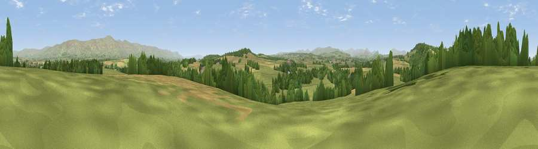

Viewpoint near Edenhall
#13448 in England · top 56% of its area beats it · near EdenhallThe view, rendered

A 360° render of this exact spot computed from the terrain model, tree cover and land cover — summer colours, afternoon light, calibrated against photographs of famous viewpoints. Real trees, hedges and buildings will differ in detail.
The panorama
Grey silhouette: terrain skyline in each direction (720 bearings, Earth curvature and refraction included). Dashed green: skyline with trees (+15 m) and buildings (+8 m) as obstacles. Blue strip: how far the ground is visible on each bearing.
Where the view opens
Wedge length = distance to the farthest visible ground on that bearing (vegetation-aware). Rings at 10, 25 and 50 km.
What fills the view
63% grassland · 19% woodland · 17% cropland · 1% built-up
Angular shares of the visible panorama (visual magnitude), not map area. Landscape diversity 0.43 (0–1 Shannon).
Key numbers
More beautiful places nearby
The staircase of upgrades: each row has a higher view potential than everything closer. Driving times are estimates from straight-line distance, calibrated against real road routing — check an actual route before setting out.
| Place | Direction | Drive | Score |
|---|---|---|---|
| Viewpoint near Edenhall | WNW · 2 km | ~5 min | 72.5 |
| Viewpoint near Penrith | WNW · 2 km | ~6 min | 72.8 |
| Viewpoint near Penrith | W · 4 km | ~10 min | 75.6 |
| Viewpoint near Plumpton | NW · 7 km | ~15 min | 78.9 |
| Viewpoint near Watermillock | SW · 14 km | ~25 min | 82.6 |
| Viewpoint near Watermillock | SW · 14 km | ~26 min | 83.5 |
| Viewpoint near Legburthwaite | SW · 27 km | ~43 min | 83.8 |
| Viewpoint near Legburthwaite | WSW · 28 km | ~44 min | 84.5 |
54.66835, -2.67791 · source: screening · position refined by local search. Computed location — check access rights before visiting.